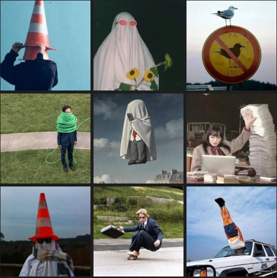
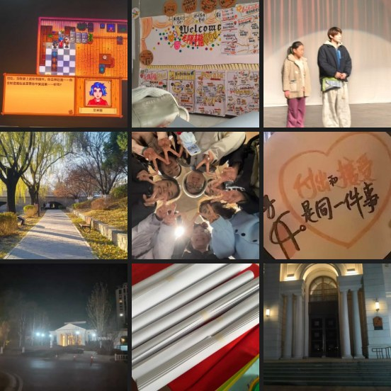
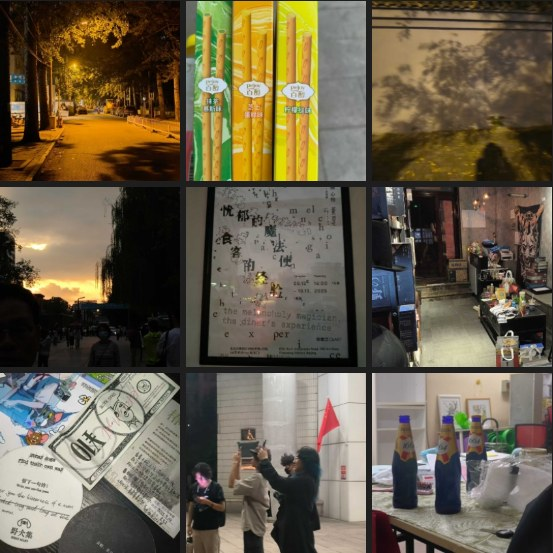
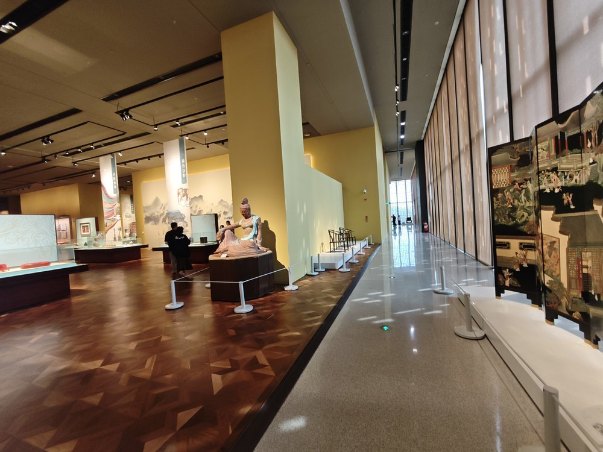
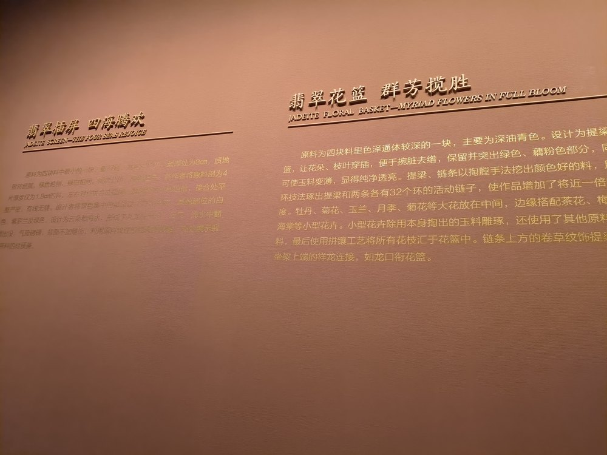
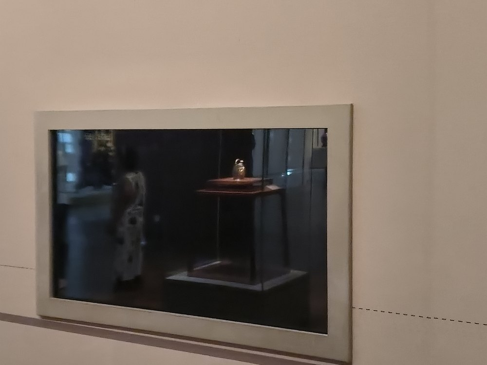
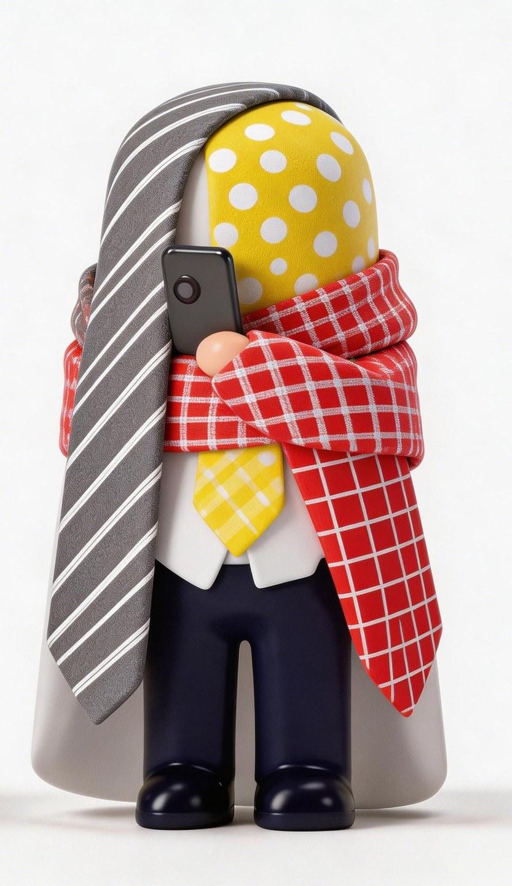
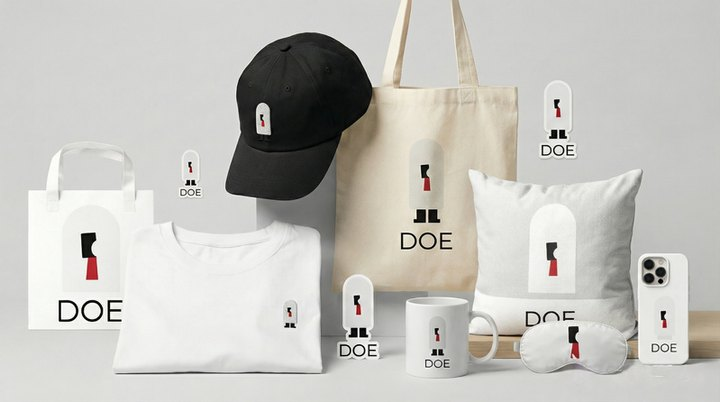
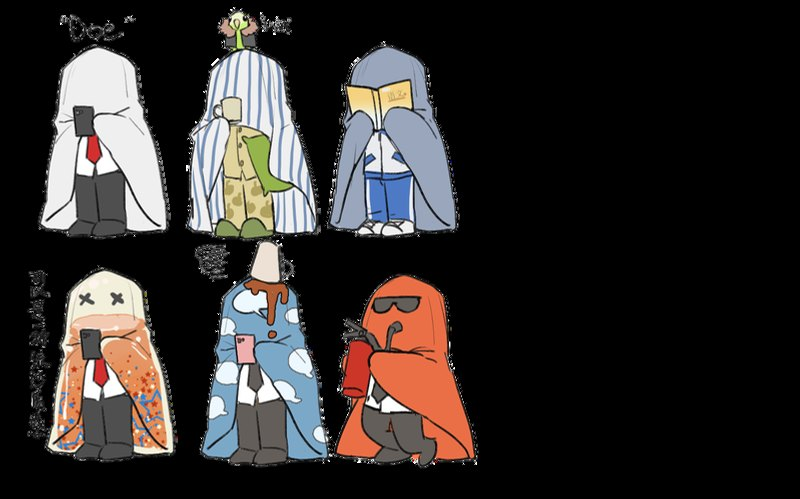

朋友圈观察
记录真实表达、情绪语气和社交平台上的微小叙事。
PROJECT 05 / MATERIAL ARCHIVE
观察档案不是主项目，而是支撑材料。它解释为什么我的项目不是临时拼接，而是来自长期观察、材料积累和持续复盘。
FIELD NOTE
记录真实表达、情绪语气和社交平台上的微小叙事。
看不清、找不到、没地方坐、交互失败，这些都是内容和设计问题的早期信号。
路灯、雪夜、楼梯、窗口、廉价食物和散步，为内容提供具体场景。
情绪、身体、表达、疗愈和存在主义，为议题提供深层结构。
持续记录 AI 工具变化、使用边界和适合转化的内容选题。
材质、形态、动线、物件和交互细节，为视觉内容和体验项目提供素材。
IMAGE ARCHIVE






SUPPLEMENT
《被单人 Doe and friends》不再作为首页主案例展示，也不单独建立详情页。它作为补充观察保留在这里：曾尝试将“体面发疯”“打工人情绪”和 meme 语境转化为 IP 视觉符号。



HOW IT BECOMES TOPICS
PROOF
观察档案证明我具备长期素材积累与内容选题来源。我的项目不是临时拼接，而是来自持续观察、材料分类和复盘判断。